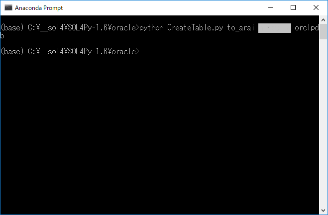

|
SOL4Py Sample: CreateTable
|

#******************************************************************************
#
# Copyright (c) 2018-2019 Antillia.com TOSHIYUKI ARAI. ALL RIGHTS RESERVED.
#
# This program is free software: you can redistribute it and/or modify
# it under the terms of the GNU General Public License as published by
# the Free Software Foundation, either version 3 of the License, or
# (at your option) any later version.
#
# This program is distributed in the hope that it will be useful,
# but WITHOUT ANY WARRANTY; without even the implied warranty of
# MERCHANTABILITY or FITNESS FOR A PARTICULAR PURPOSE. See the
# GNU General Public License for more details.
#
# You should have received a copy of the GNU General Public License
# along with this program. If not, see <http://www.gnu.org/licenses/>.
#
#******************************************************************************
# encoding: utf-8
# CreateTable.py
# 2018/09/30
import sys
import os
import configparser
sys.path.append('../')
from SOL4Py.ZMain import *
from SOL4Py.oracle.ZOracleDB import *
if main(__name__):
# user passwd service server port
try:
db = ZOracleDB(argv=sys.argv)
create_tbl = "Create Table ZUser("\
+ "ID Number(6) not NULL primary key,"\
+ "Name varchar2(255) not NULL,"\
+ "Sex varchar2(10),"\
+ "Age Number(4),"\
+ "Birthday Date,"\
+ "Email varchar2(255),"\
+ "Telephone varchar2(128),"\
+ "Address varchar2(255),"\
+ "Company varchar2(255))"
db.execute(create_tbl)
except (cx_Oracle.DatabaseError) as ex:
print("Exception {}".format(ex))
Last modified: 22 Mar. 2019